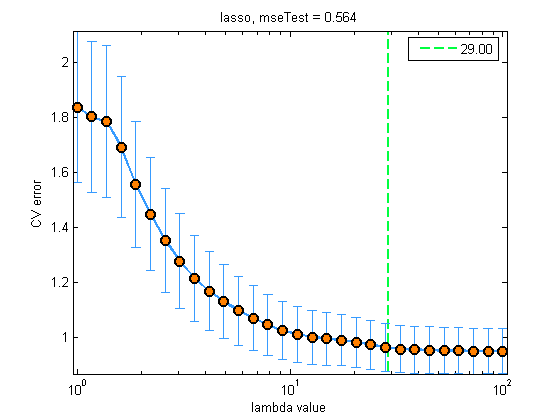
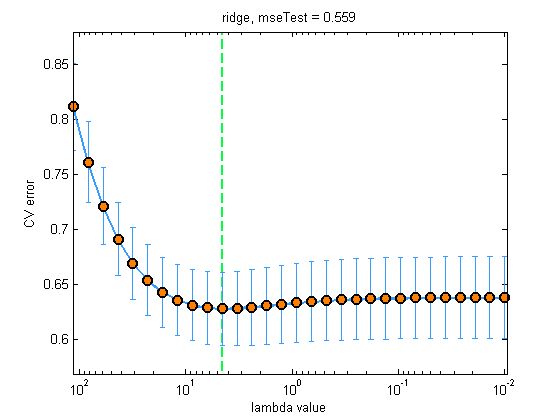
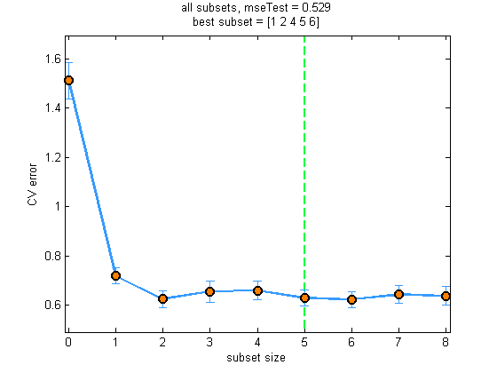

Contents
function prostateComparison()
Compare L1, L2, allSubsets, and OLS linear regression on the prostate data set
Reproduced table 3.3 and fig 3.7 on p63 of "Elements of statistical learning" 2e
saveLatex = false; setSeed(1); mse = zeros(4, 1); weights = zeros(9, 4); data = load('prostate.mat'); data.X = mkUnitVariance(center(data.X)); %data.y = center(data.y); data.Xtrain = data.X(data.istrain, :); data.Xtest = data.X(~data.istrain, :); standardizeData = false; % no need to do this inside CV fitFns = {@(X, y, lambda)linregFitL1(X, y, lambda, 'lars', standardizeData), ... @(X, y, lambda)linregFitL2(X, y, lambda, 'QR', standardizeData)}; predictFn = @linregPredict; lossFn = @(yhat, ytest)mean((yhat - ytest).^2); lambdas = logspace(2, 0, 30); figureNames = {'prostateLassoCV', 'prostateRidgeCV'}; titlePrefixes = {'lasso', 'ridge'}; nfolds = 10; useLogScale = true; for i=1:numel(fitFns); [model, lambdaStar, mu, se] = ... fitCv(lambdas, fitFns{i}, predictFn, lossFn, data.Xtrain, data.ytrain, nfolds); figure; plotCVcurve(lambdas(end:-1:1), mu, se, lambdaStar, useLogScale); xlabel('lambda value'); yhat = linregPredict(model, data.Xtest); mse(i) = lossFn(yhat, data.ytest); title(sprintf('%s, mseTest = %5.3f', titlePrefixes{i}, mse(i))); printPmtkFigure(figureNames{i}); weights(:, i) = [model.w0; colvec(model.w)]; end 
All subsets
function model = fitFn(X, y, ndx) [N,D] = size(X); include = ndx{:}; exclude = setdiff(1:D, include); X(:, exclude) = 0; lambda = eps; % needed to avoid numerical issues caused by 0 entries in X model = linregFitL2(X, y, lambda, 'QR', false); end
d = size(data.Xtrain, 2); ss = powerset(1:d); % 256 models [modelFull, bestNdx] = ... fitCv(ss, @fitFn, predictFn, lossFn, data.Xtrain, data.ytrain, nfolds); ssStarFull = ss{bestNdx};
for plotting purposes, look at fewer subsets
ssSmall = {[], 1, 1:2, 1:3, 1:4, 1:5, 1:6, 1:7, 1:8};
[model, ssStarNdx, mu, se] = ...
fitCv(ssSmall, @fitFn, predictFn, lossFn, data.Xtrain, data.ytrain, nfolds);
ssStarNdx = ssStarNdx-1; % -1 since we are counting from size = 0
%ssStarNdx = cellfind(ssSmall, ssStar) - 1;
useLogScale = false;
figure;
plotCVcurve(0:8, mu, se, ssStarNdx, useLogScale); % plot w.r.t to subset sizes
xlabel('subset size');
yhat = linregPredict(modelFull, data.Xtest);
mse(3) = lossFn(yhat, data.ytest);
t = { sprintf('%s, mseTest = %5.3f', 'all subsets', mse(3));
['best subset = ', mat2str(ssStarFull)]
};
title(t);
printPmtkFigure('prostateSubsetsCV');
weights(:, 3) = [modelFull.w0; colvec(modelFull.w)];
 OLS
model = linregFit(data.Xtrain, data.ytrain); weights(:, 4) = [model.w0; colvec(model.w)]; yhat = linregPredict(model, data.Xtest); mse(4) = lossFn(yhat, data.ytest);
fprintf('| OLS | SS | L2 | L1 |\n'); fprintf('weights: \n'); display(roundto(weights(:, end:-1:1), 0.001)); fprintf('mse: \n'); display(roundto(mse(end:-1:1), 0.001));
| OLS | SS | L2 | L1 |
weights:
ans =
2.4520 2.4810 2.4790 2.4800
0.7160 0.6510 0.6560 0.6530
0.2930 0.3800 0.3000 0.2970
-0.1430 0 -0.1290 -0.1190
0.2120 0 0.2080 0.2000
0.3100 0 0.3010 0.2890
-0.2890 0 -0.2600 -0.2360
-0.0210 0 -0.0190 0
0.2770 0.1780 0.2560 0.2260
mse:
ans =
0.5860
0.5720
0.5800
0.5640
if saveLatex weights = weights(:, end:-1:1); mse = mse(end:-1:1); headers = {'Term', 'LS', 'Best Subset', 'Ridge', 'Lasso'}; terms = [{'Intercept'}, data.names(1:8), {'Test Error'}]'; table = [cell(10, 1), num2cell([weights; rowvec(mse)])]; latextable(table, 'Horiz', headers, 'Vert', terms, 'format', '%.3f', 'Hline', [1, 10]); end
end